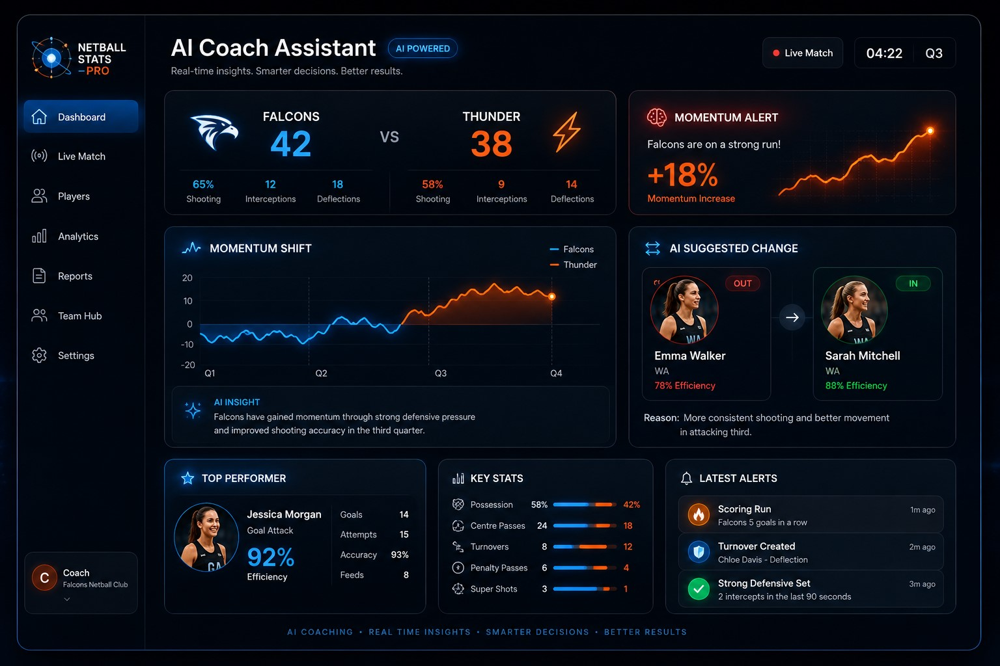
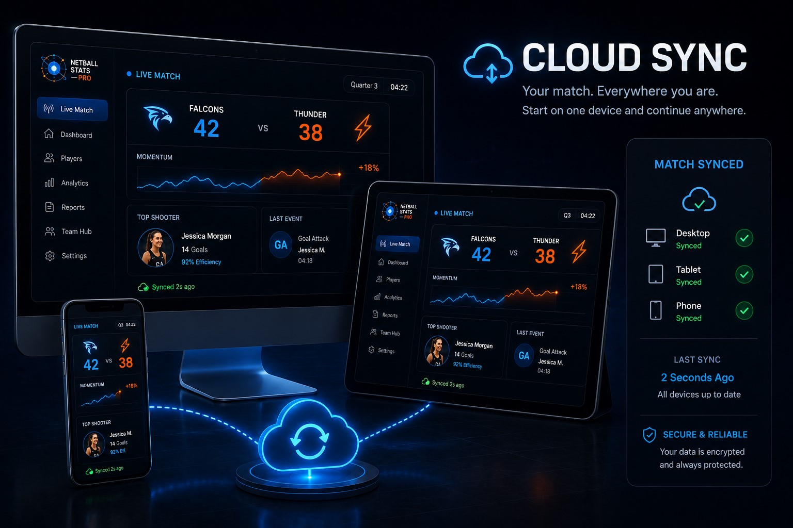
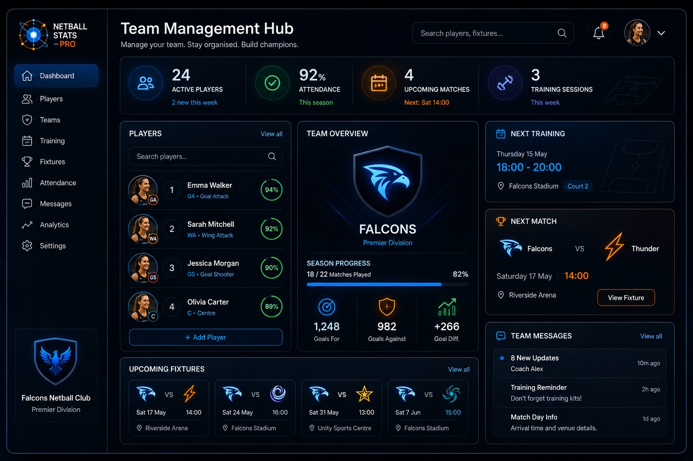

Live Match Intelligence
Track momentum swings, scoring runs, substitutions, and live player performance during every phase of the game.
248Live Events
92%Accuracy
18%Momentum
Monitor live matches, track player performance, and make smarter substitutions with precision insights in every quarter.
Tracked
Elite Performance
Trending Up
14 Goals
Powerful tools designed for coaches, analysts and teams who demand precision, clarity and performance insights.
Track momentum swings, scoring runs, substitutions, and live player performance during every phase of the game.
Detailed player statistics, heatmaps, and performance trends that reveal the real impact on court.
Explore →Automated reports and visual summaries that help you review, reflect, and improve faster.
Explore →Your data is protected with enterprise-grade security and reliable cloud infrastructure.
Explore →We’re building the future of netball analytics with smart, connected tools that empower every team.
AI-powered insights and automated tactical recommendations to help you make smarter decisions.
IN DEVELOPMENTSeamless cloud synchronization across devices so your data is always up to date.
IN DEVELOPMENTCollaborate with coaches, analysts and staff in real time with shared reports and insights.
IN DEVELOPMENT


As teams begin using Netball Stats Pro, this section will showcase real-world analytics and platform growth.
Description
We're building the next generation of netball performance technology. Three major innovations are currently in development to help coaches make smarter decisions, manage teams more effectively and unlock deeper insights.

Your digital assistant on the sideline. Receive intelligent coaching insights, identify momentum shifts and discover smarter substitution opportunities.
Access your matches anywhere. Automatically sync statistics, reports and team information across every device.


Manage your entire club from one platform. Track attendance, schedules, training sessions and team communication.
Authentication System is curently in development.